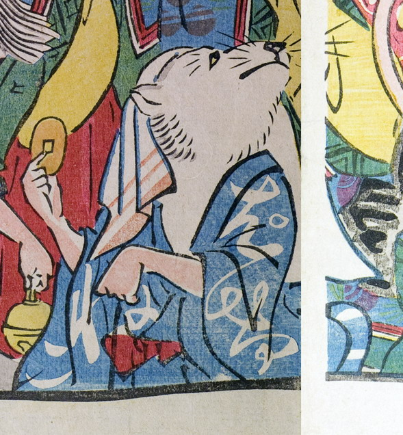

化け猫；バケネコ，猫；ネコ，小判；コバン

小判を手に持った猫の化物。手ぬぐいをかぶり、上を向いている。着物の柄に、「ばけねこ」とある。
著作者：玉園／出典：親書誌：U426_nichibunken_0145：画本西遊記百鬼夜行ノ圖；エホンサイユウキヒャッキヤギョウノズ／日付：2009／資源識別子：U426_nichibunken_0145_0006_0000
Copyright (c)2010- International Research Center for Japanese Studies, Kyoto, Japan. All rights reserved.